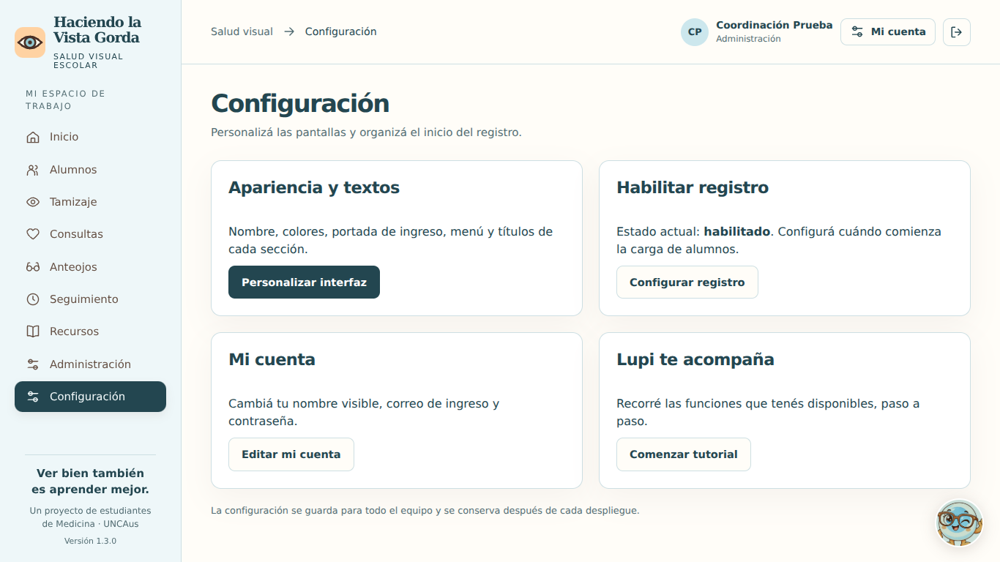

Actualizar Salud Visión a la versión 1.3.0
Esta guía es para tu aplicación que ya funciona en app-salud-vision.vercel.app. La actualización conserva las cuentas, escuelas y fichas en la misma base. No necesitás crear otro proyecto ni volver a preparar claves.
1. En tu computadora
- Descargá el ZIP nuevo y hacé clic derecho → Extraer todo.
- Abrí la carpeta extraída. Debés ver juntas las carpetas
api, public, server, shared, scripts, supabase, tests, docs y los archivos package.json, package-lock.json y vercel.json. - Podés abrir LEEME_ACTUALIZACION.html con doble clic para leer esta guía en el navegador.
2. En GitHub
Abrí tu repositorio app-salud-vision.
- Entrá a Code y a la rama main.
- Elegí Add file → Upload files.
- Desde la carpeta extraída, arrastrá su contenido completo, incluyendo las carpetas. Conservá la estructura:
api/index.js tiene que quedar dentro de api, y public/app.js, dentro de public. - Incluí package.json y package-lock.json: contienen la dependencia del Excel nuevo.
- Confirmá los cambios con el mensaje Actualizar Salud Visión 1.3.0. Si tu rama requiere revisión, creá la propuesta y completá ese proceso para incorporarla a
main.
El ZIP cerrado no se sube como código. Tampoco abras todas las carpetas para juntar sus archivos: eso vuelve a romper las rutas. Si aparece index (1).js, se están mezclando archivos en lugar de conservar las carpetas. Podés revisar la guía oficial de carga de GitHub.
3. En Vercel
Abrí el proyecto existente app-salud-vision, dentro de tu equipo habitual.
- Entrá a Deployments y buscá el despliegue correspondiente al cambio nuevo en GitHub.
- Con la integración de Git conectada, Vercel crea el despliegue al actualizar la rama de producción. Esperá que indique Ready. Documentación de Vercel.
- La configuración incluida usa Node 24, instalación npm ci, compilación npm run check y salida public. La raíz del proyecto sigue siendo la carpeta que contiene
package.json. - Conservá las variables que ya funcionan: especialmente
DATABASE_URL, el DATA_SECRET original, DATABASE_CA si ya lo usás y el origen de la app. Esta actualización no requiere generar otro secreto. - Abrí Salud Visión y actualizá con Ctrl + F5.
Si no aparece un despliegue nuevo, revisá que el commit esté en el repositorio y rama conectados. Redesplegar un commit anterior vuelve a publicar el código anterior.
4. En Supabase
Para actualizar desde la versión anterior de esta misma app no tenés que ejecutar SQL nuevo. La configuración nueva se guarda en hv.meta, que ya existe. Las fichas y cuentas siguen en el mismo esquema hv y proyecto.
No borres tablas, no vuelvas a instalar la base y no restablezcas su contraseña para aplicar esta actualización. Las demás aplicaciones conservan sus propios datos y accesos.
5. Dentro de Salud Visión
| Lo que querés hacer | Dónde está |
|---|
| Cambiar tu nombre o correo de ingreso | Mi cuenta, arriba a la derecha. Confirmás con tu contraseña actual. |
| Cambiar tu contraseña | Mi cuenta → Cambiar contraseña. |
| Cambiar colores, marca, menú, títulos, descripciones y portada de ingreso | Configuración → Personalizar interfaz. Abrí cada grupo de campos y guardá. |
| Habilitar la carga de alumnos y actividades | Configuración → Configurar registro. Elegí Habilitado y confirmá protocolo y procedimiento de autorizaciones. |
| Eliminar otra cuenta, incluso administrativa | Administración → Gestionar → Eliminar cuenta. Escribí su correo para confirmar. |
| Aprender con Lupi | Recursos → Empezar tutorial con Lupi, o el botón flotante de Lupi. |
| Descargar el informe | Alumnos → Indicadores Excel. Disponible para Administración y Profesional. |
En Mi cuenta, el nombre visible puede ser tu nombre y apellido. El correo sigue siendo el dato para ingresar. Los cambios cierran tus otras sesiones; la sesión actual se renueva.
La eliminación revoca el acceso y retira la cuenta del equipo visible. Conserva su identidad como autor de registros anteriores. No se permite eliminar tu propio acceso ni dejar la app sin administradores activos. El correo de una cuenta eliminada permanece reservado por ese historial.
Dos campos que ahora están explicados
Dónde se guarda la autorización: escribí una referencia para encontrar el documento que conserva la escuela, por ejemplo, «Carpeta de autorizaciones 2026, folio 15». No es una clave ni un archivo que debas subir.
La carga de alumnos está desactivada: significa que la instalación todavía está en preparación o que un administrador la pausó. Podés crear escuelas y cuentas. La carga se habilita desde Configuración cuando el equipo confirma que está listo. Cada alumno sigue necesitando su autorización antes del tamizaje.
Qué cambia en el Excel
Es un libro .xlsx con tres hojas: Resumen, Escuelas y Guía. Incluye colores, filtros, encabezados fijos, totales y porcentajes. La cobertura significa evaluados / registrados; no compara contra toda la matrícula escolar. El detalle no incluye nombres, DNI ni diagnósticos de alumnos.
En docs/Indicadores_Ejemplo.xlsx tenés un ejemplo con datos ficticios.
Confirmar que quedó actualizado
- La parte inferior del menú muestra Versión 1.3.0, con la frase centrada y corregida.
- Podés entrar en Mi cuenta y Configuración con una cuenta administrativa.
- El botón de exportación descarga
.xlsx y aparecen sus tres hojas. - Lupi permite avanzar, volver y cerrar el tutorial.
- Al recargar, siguen el nombre y la configuración guardados.
Se completaron 89 pruebas automatizadas y los simulacros de navegador descritos en docs/VERIFICACION.md. La conexión y publicación en tu cuenta de Vercel deben comprobarse después de subir esta versión.

Panel de Configuración. Captura de prueba con la paleta celeste seleccionada; la paleta inicial sigue siendo crema y durazno.